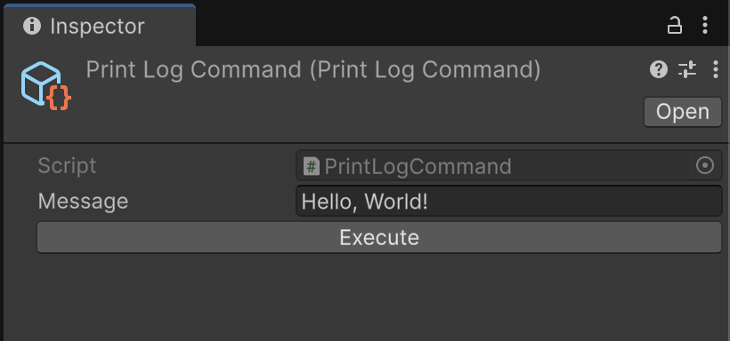
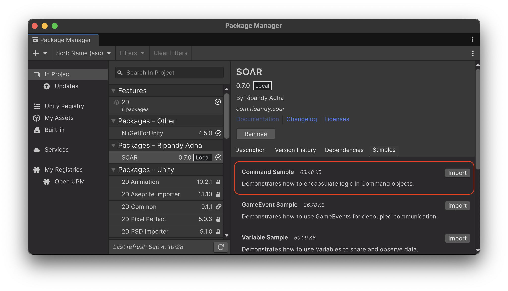

Command¶
An implementation of the Command pattern, the Command class in SOAR provides a way to encapsulate an action or operation as a ScriptableObject.
This allows for defining reusable operations that can be triggered from various parts of an application—including editor scripts, UI events, or other game logic—promoting a decoupled architecture.
This pattern is useful for one-way executions, such as logging.
Command inherits from SoarCore, gaining its lifecycle management features, including editor integration and handling for domain reloads.
Core Concepts¶
Synchronous Execution¶
The primary way to trigger a command is by calling its Execute() method. This method should contain the logic for the action the command represents.
// Example of a simple Command
// File: MySimpleCommand.cs
using Soar;
using Soar.Commands;
using UnityEngine;
[CreateAssetMenu(fileName = "MySimpleCommand", menuName = MenuHelper.DefaultCommandMenu + "My Simple Command")]
public class MySimpleCommand : Command
{
public override void Execute()
{
Debug.Log("MySimpleCommand Executed!");
}
}
To use this command:
- Create an instance of
MySimpleCommandvia theAssets/Create/SOAR/Commands/My Simple Commandmenu. - Assign this instance to a script or UI event.
- Call
mySimpleCommandInstance.Execute()to run the command.
Asynchronous Execution¶
Commands also support asynchronous execution via the ExecuteAsync() method.
This is useful for operations that might take time and should not block the main thread.
It returns a ValueTask for efficient asynchronous operations.
It accepts an optional CancellationToken to allow for cancellation.
It automatically links the provided CancellationToken with Application.exitCancellationToken, ensuring the async operation is cancelled if the application quits.
By default, ExecuteAsync() simply calls the synchronous Execute() method and returns a completed ValueTask.
To implement true asynchronous behavior, override ExecuteAsync() in derived classes.
// Example of an async Command
// File: MyAsyncCommand.cs
using Soar;
using Soar.Commands;
using System.Threading;
using System.Threading.Tasks;
using UnityEngine;
[CreateAssetMenu(fileName = "MyAsyncCommand", menuName = MenuHelper.DefaultCommandMenu + "My Async Command")]
public class MyAsyncCommand : Command
{
public override void Execute()
{
// Fallback for synchronous execution if needed
Debug.Log("MyAsyncCommand Executed (synchronously).");
}
public override async ValueTask ExecuteAsync(CancellationToken cancellationToken = default)
{
// Link with Application.exitCancellationToken is handled by the base class
Debug.Log("MyAsyncCommand Started (asynchronously)...");
try
{
await Task.Delay(2000, cancellationToken); // Simulate async work
Debug.Log("MyAsyncCommand Finished (asynchronously).");
}
catch (System.OperationCanceledException)
{
Debug.Log("MyAsyncCommand was cancelled.");
}
}
}
Commands with Parameters¶
For commands that require input parameters, use the generic Command<T> class.
// Example of a Command with a parameter
// File: LogMessageCommand.cs
using Soar;
using Soar.Commands;
using UnityEngine;
[CreateAssetMenu(fileName = "LogMessageCommand", menuName = MenuHelper.DefaultCommandMenu + "Log Message Command")]
public class LogMessageCommand : Command<string>
{
public override void Execute(string message)
{
Debug.Log($"Message: {message}");
}
// Optionally override ExecuteAsync(T param, CancellationToken cancellationToken)
// if specific async behavior with parameter is needed.
// By default, it will call Execute(param).
}
To use this:
// In some other script
public LogMessageCommand logCommand;
public string messageToLog = "Hello from Command!";
void Start()
{
if (logCommand != null)
{
logCommand.Execute(messageToLog);
}
}
The non-generic Execute() method in Command<T> will call Execute(default(T)).
Editor Integration¶
When a Command (or any class derived from it) is selected in the Unity Editor, the Inspector will display an "Execute" button.
Clicking it will call the Execute() method of the selected Command instance.

Editor Execution
The "Execute" button in the Inspector allows you to run commands in both Play Mode and Edit Mode. Ensure that the code within your Execute() method is safe to run in Edit Mode, as it might affect your project files or scene state permanently.
Lifecycle and Disposal¶
As Command inherits from SoarCore, it participates in the SOAR lifecycle. The Dispose() method is available to be overridden if your command needs to clean up any resources. By default, the Dispose() method in Command is empty.
// File: MyResourcefulCommand.cs
using Soar;
using Soar.Commands;
using UnityEngine;
[CreateAssetMenu(fileName = "MyResourcefulCommand", menuName = MenuHelper.DefaultCommandMenu + "My Resourceful Command")]
public class MyResourcefulCommand : Command
{
private System.IO.StreamWriter _writer;
public override void Execute()
{
_writer = new System.IO.StreamWriter("my_command_log.txt", append: true);
_writer.WriteLine($"Command executed at {System.DateTime.Now}");
Debug.Log("MyResourcefulCommand Executed and wrote to log.");
}
public override void Dispose()
{
_writer?.Dispose();
_writer = null;
Debug.Log("MyResourcefulCommand Disposed.");
base.Dispose(); // Call base if SoarCore's Dispose has logic
}
}
Use Cases¶
Commands are versatile and can be employed in numerous scenarios to enhance code organization and reusability. Here are some use cases in which you can utilize Commands:
-
SubmitFormCommand<FormData>: A command that takes form data as a parameter. It could validate the input and then send it to a backend service or update local game data. -
SaveGameCommand: Provides a consistent way to trigger the save game process, regardless of whether it's initiated by an autosave timer, a player action, or a level transition. The command itself would interact with your saving/loading system. -
AnalyticsEventCommand<AnalyticsData>: A generic command to send analytics events. Different parts of your game can raise this command with specificAnalyticsData(e.g., level completion, item purchase) without needing to know the specifics of the analytics SDK implementation. -
Debugging and Testing Specific Functionalities from the Editor: As shown in the "Editor Integration" section, any
Commandcan be executed directly from the Inspector. This is invaluable for testing isolated pieces of logic without needing to play through entire game sequences.
By using Commands, you create a clear separation of concerns. The invoker of a command doesn't need to know how the action is performed, only what action to trigger. This makes your codebase more modular, easier to understand, and simpler to maintain and extend.
Sample Usage¶
To test this feature, the relevant sample package can be imported from the Package Manager window.

The sample demonstrates how to create both parameterless and typed Command assets to log messages to the console.
It shows how they can be triggered directly from a UnityEvent in the Inspector.
For detailed setup and usage instructions, please refer to the README.md file inside the CommandSamples folder after importing.